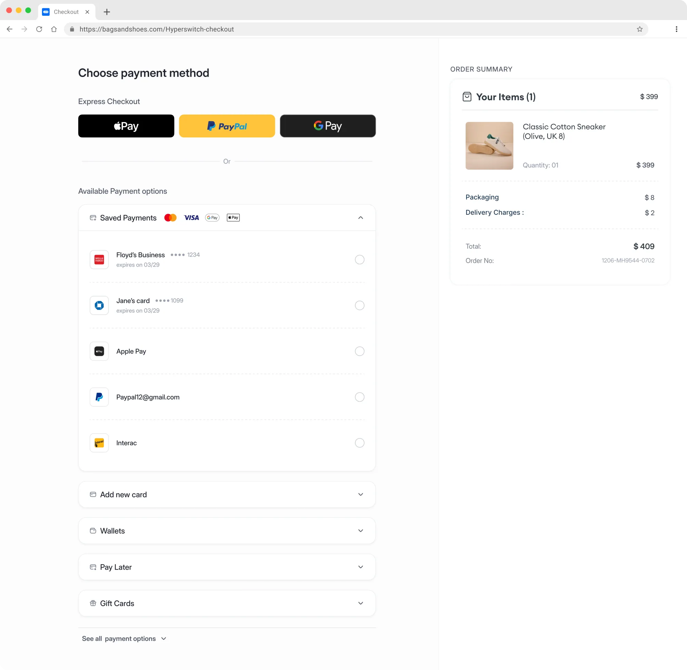
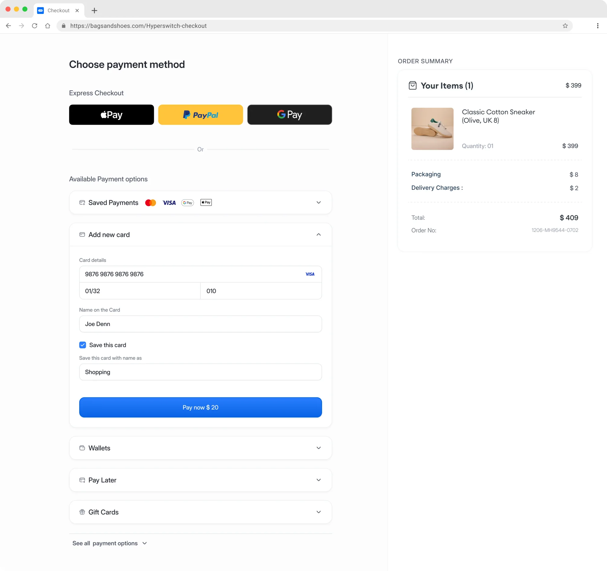
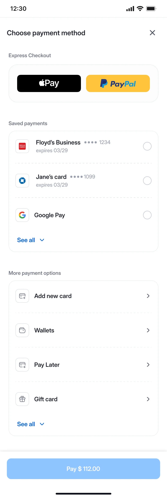
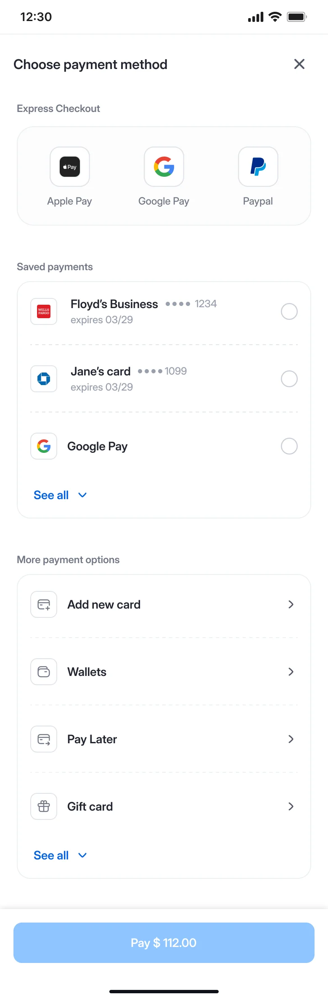

Hyperswitch SDK
- Solo Product Designer
- Juspay Hyperswitch
- End-to-end revamp

Redesigned the Hyperswitch payment SDK end to end as the only designer on it, from how payment methods are grouped to the card form itself, across desktop and mobile.
What is the Hyperswitch SDK?
The Hyperswitch SDK is the checkout that merchants drop into their store. It brings together the payment methods shoppers in Western markets expect, like cards, wallets, pay later and gift cards, on one page. Merchants can turn on many of them, but cards are the one almost everyone sets up, so the card flow got the most attention.
The new checkout
Placeholder copy: a line on how express checkout, saved payments and the rest of the payment methods are now laid out, and why.

On a phone
Placeholder copy: how the same checkout fits a small screen, with express checkout first, saved payments next, and every other option one tap away.

